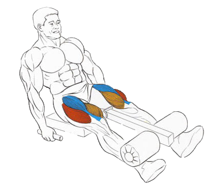

Это упражнение хорошо прорабатывает квадрицепс, прорисовывая, главным образом, переднюю поверхность бедра.
При выполнении не стоит работать с большим весом, поскольку нагрузка на коленный сустав довольно велика.
Исходное положение:
Поясница плотно прижата к сидению.
Заведите ноги под валик.
Возьмитесь руками за боковые рукояти.
Техника выполнения:
Вдохните, на выдохе, используя силу квадрицепсов, распрямите ноги до параллели с полом.
Задержитесь на 1-2 счета в сжатом положении и затем медленно верните снаряд в исходное положение.
Рекомендации:
Упражнение нужно делать медленно, чувствуя мышцу, которую прорабатываете. Быстрое «раскачивание» по инерции лишает упражнение смысла.
Количество повторений больше, чем в базовых упражнениях.
Ощущение жжения мышцы – нужный показатель.